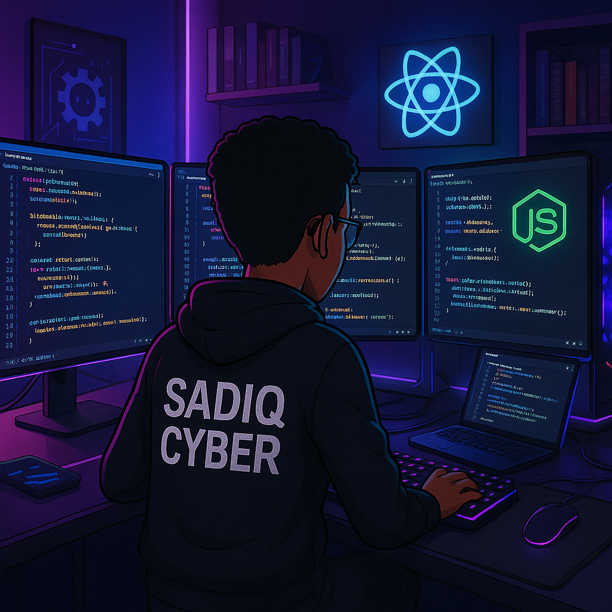
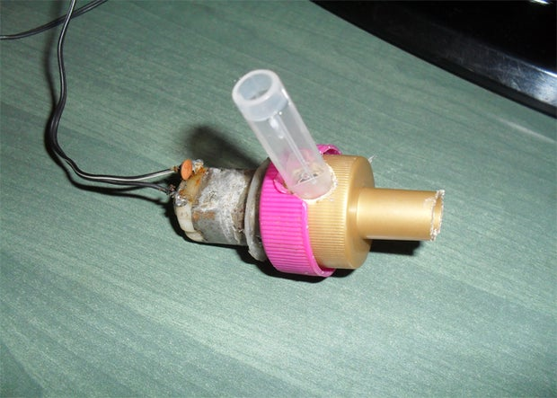
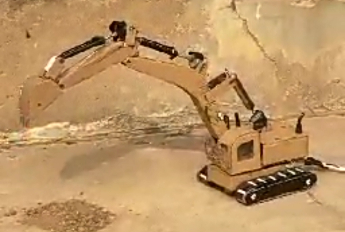
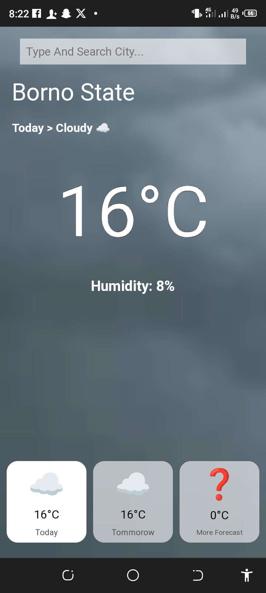
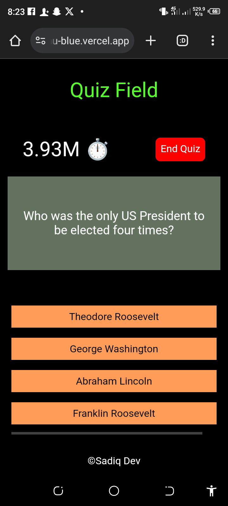
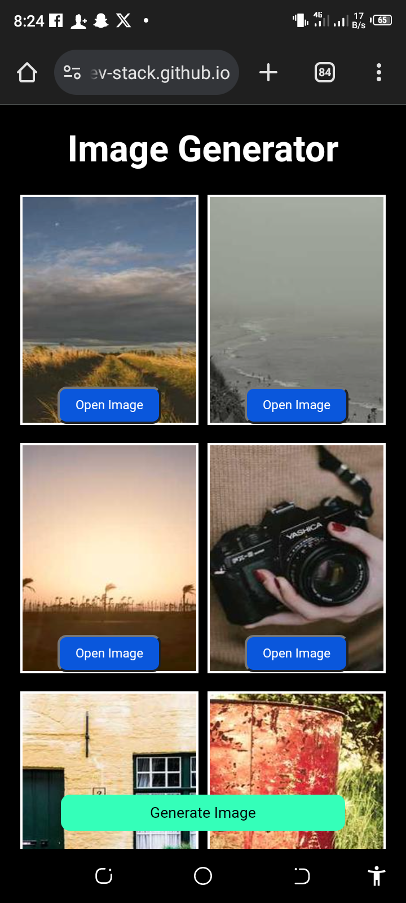
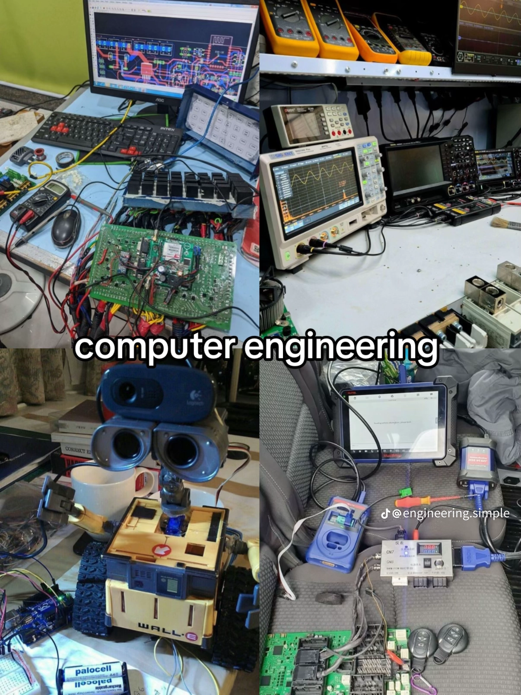

About Me
I am a young Nigerian self-taught innovator passionate about coding, electronics, AI, automation, and mechatronics engineering. My vision is to make Africa developed through technology.
Why I Created This
To showcase my skills, connect with like-minded individuals, get support, and learn more.
My Tech Journey 👨💻🛰️
 I started my tech journey at age 14 I started exploring physical aspects 🛠️, making research and building electronics based projects, I have builded alot of prototype projects like e-cars 🚗, e-pumps , irrigation system 🌊 etc , I switched to coding at 16 while I can't continue the technical aspect which is resource internsive and requires money 💰 I started coding in 2024 👩💻, with my phone 📱 I thought myself full stack web development and builded many projects from pwa apps to website and games, watching tutorials making research and practicing what I have learned day by day📓 I learned frontend development in 2024, and in 2025 I started exploring backend development, Currently I have covered alot about full stack development and am building Fullstack projects to enhance my skills MY STACK FRONTEND: HTML, Css, and JavaScript BACKEND: nodejs, expressjs, and mongodb Other: redis, socket.io, web security etc throughout the journey I have faced alot of challenges, I split my phone screen to code ( terminal + code editor ) , switching between editors, servers crashing, frameworks not supported etc, despite the challenges I didn't give up, I was always inspired and fueled by my passion and faith though my interest for coding isn't just about building apps or website, is about programming the physical tools I builded , which still requires resources I don't yet have whenever I feel like giving up, I try to remind myself why I started and the lost when I gave up my vision is to make Africa a developed place expecially Nigeria , promote techs , provide startups, produce our own resources not relying on others, and also providing innovative solutions to human problems bringing new inventions to the world , which will highly reduce cost of living in the whole country , 🌍 let's connect hands and unite together to bring promotions and impact to our country and the world as whole , knowledge are hidden in brains of untapped minds , but no support to proof 🤝 🎯 my dream is to become a full mechatronics engineer and person with deep knowledge in tech, who can solve people's problem by utilizing his knowledge, bringing new innovations to the world there are alot In tech I like to explore , like ai, cybersecurity, embedded system , etc but resources don't permit, which will learn. later ❤️ I have alot to tell , but this is short about me , am looking forward to connect with like minded peoples, 📍If you’re in Maiduguri or anywhere in Nigeria, let’s connect and grow together. Current age: 17 Motivation: You can do anything done by humans like you — if you stay dedicated. Eager for: Knowledge , research Aura: Imagine , research, build, code. tech. Challenges: Good Pc, Resource Fund hoping soon everything will get well and archive my dream Electromechanical Projects - Small
Water Pump
Low-voltage pump to help farmers access water, powered by car battery or solar panel.
Excavator
DC-powered excavator for easy transportation of heavy materials.
Water Level Indicator
this measures level of water, usefull for water monitoring system , this can indicate when a tank or river is full , this feel blurry because i did this years ago
Walking Car
Fun project demonstrating potential for local e-car production.
Programming Projects
S'post 🌍
a small secure fast public posting app that allow users to make post react and more
Weather App
app that allow peoples to view weather of any places, forecast, wind direction and more weather data
Quiz App
 sadiq cybet">app that allows users to take quizes with different subject in different field like arts, scince commercial etc
Image Generator
App that generate random images for diffirent use cases like wallpapers, nature and more
Send Feedback
What I Am Learning
Programming, electronics, Mechatronics Engineering or Computer Engineering.
Donation
this can help me in building projects:
Account Number: 8145742404
Account Name: Abubakar Muhammad
Bank Name: Opay